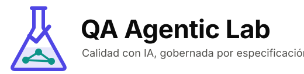

Logo de QA Agentic Lab · tres direcciones
Cada opción, sobre el fondo claro y el oscuro de GitHub. El SVG adapta sus colores al tema por sí solo.
A · Matraz
"Lab" literal: un matraz con un equipo de agentes dentro y un check que sube. El más narrativo.

B · Escudo
Calidad como garantía: el check del escudo está hecho de agentes conectados. El más sólido y legible en pequeño.
C · Lupa
Inspección: una lupa que examina una red de agentes alrededor de un núcleo. El más "tecnológico".